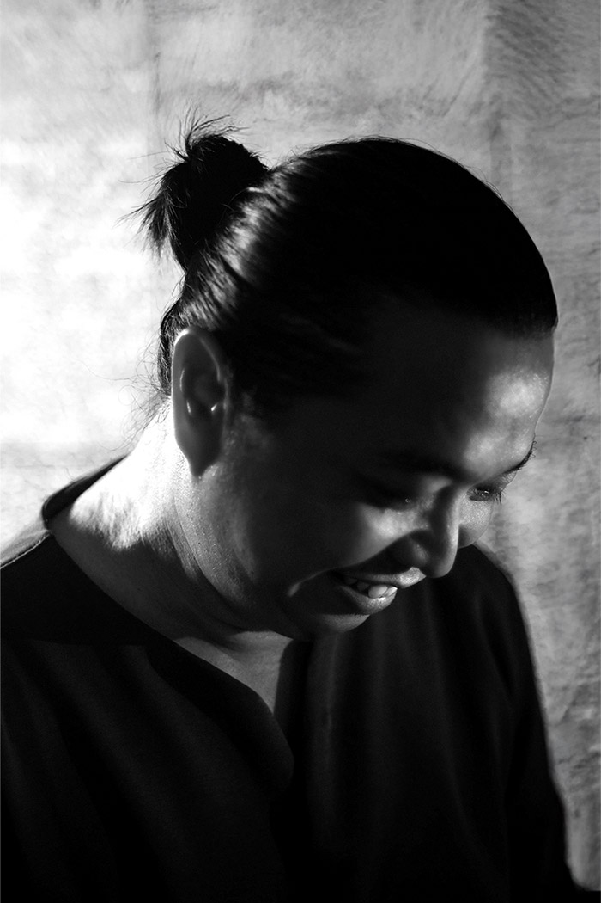

陈威汕是一位现居吉隆坡的艺术工作者与牧者，创作以绘画为主，灵感源自自然生命体的系统性与秩序。他透过化约的视觉语言，运用色块、线条与圆点，探索生命在变化与结构之间的存在状态。
Chan Wei San is a Malaysian artist and pastor based in Kuala Lumpur. His painting practice is inspired by living systems in nature, exploring the relationship between order and change through reductive visual language. Using color, lines, and dots, his works investigate structure, rhythm, and the systemic beauty of life.